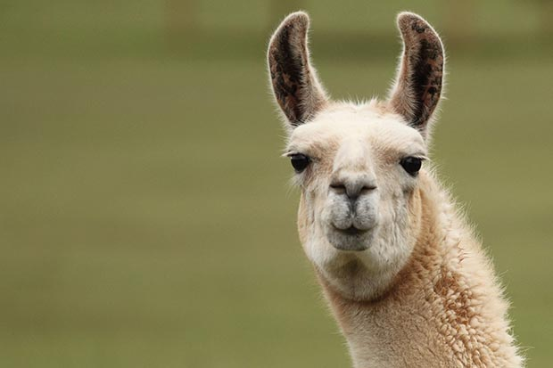
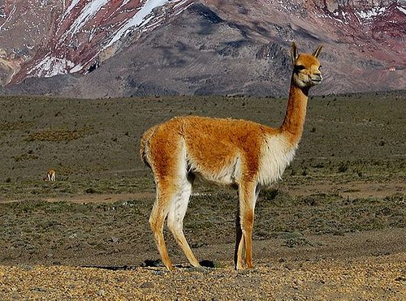

El cóndor andino se encuentra distribuido a lo largo de la Cordillera de los Andes, desde el sur de la Tierra del Fuego (Argentina y Chile) hasta el occidente de Venezuela. Uno de sus mayores hábitats se encuentra en el Cañón del Colca (siendo también uno de los mayores destinos turísticos del Perú) en la Provincia de Caylloma, Arequipa, en el sur del Perú. Sin embargo, las poblaciones registradas en Perú, Ecuador y Bolivia tienden a disminuir.
El cóndor andino es reconocido como una de las aves voladoras más grandes del planeta, llegando en ocasiones a ser superado en envergadura solamente por el albatros viajero y el real, si bien el cóndor es más alto, más robusto y más pesado que aquellos. Los adultos llegan a medir hasta 142 cm de altura, y de 270 hasta 330 cm de envergadura. Poseen la cabeza desnuda, pico de borde muy cortante y terminado en gancho. Las alas son largas y anchas, y las patas, no prensiles, poseen uñas cortas y poco curvas, y con la inserción del dedo posterior elevada. El plumaje juvenil de ambos sexos es de color marrón hasta alcanzar en mudas sucesivas el característico plumaje negro-azabache de los adultos. Una ancha banda blanca resalta en el dorso de las alas y un nítido collar blanco no completamente cerrado al frente, protege la desnuda piel del cuello.
Los primeros cóndores criados en cautiverio fueron liberados en el medio natural en el año 1989. Donde el contacto humano con la cría natural de cóndores es mínimo; los polluelos son alimentados con títeres de guante que se asemejan a los cóndores andinos adultos con el fin de evitar la impronta de los polluelos con los seres humanos, que podría ponerlos en peligro al ser liberados, debido a que no ve a los seres humanos como un peligro. Los cóndores se mantienen en aviarios durante tres meses antes de la liberación, en el que se aclimatan a un ambiente similar al entorno donde serán liberados. A los cóndores se les realiza un seguimiento por satélite con el fin de observar sus movimientos y para controlar si aún están vivos.
|  |
|  |